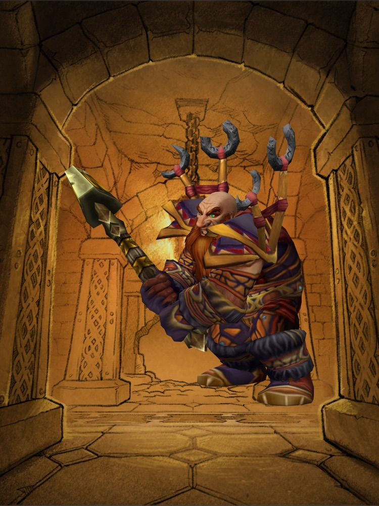

2004 guide, 2026 game
In 2004 a strategy guide was printed for a game that hadn't launched yet: 434 pages of advice, promises and a few confident mistakes. World of Warcraft: Forever goes back to that world, so we're reading the old book against the new game, one page at a time.
Start with the guideSee every then and nowChoose for launch

Start here
The guide was wrong
The guide says orcs can't be warriors
2004 said
Every Horde race has warriors except the orcs, whose ranks were "depleted" by war.
Forever says
Orc warriors are playable, as they were on the first day of the original game.
Choosing for launch
Looking ahead rather than back: the two factions and the nine classes as they stand in Forever, from what Blizzard has confirmed.
 The Alliance in Forever
The Alliance in ForeverFour old nations and one new arrival. In Forever the Alliance can field all nine classes for the first time, because dwarves can now be shaman.
 The Horde in Forever
The Horde in ForeverFour old nations and one new arrival. In Forever the Horde can field all nine classes for the first time, because the undead can now be paladins.
The verdicts so far
Each one opens its entry, with sources Changed in ForeverHuman hunters and five other firsts
Changed in ForeverHuman hunters and five other firsts Changed in ForeverThe undead find the Light
Changed in ForeverThe undead find the Light Changed in ForeverA mount cost 100 gold in 2004
Changed in ForeverA mount cost 100 gold in 2004 Still holdsGetting around: no flying, then or now
Still holdsGetting around: no flying, then or now Testing in betaPets never stop eating
Testing in betaPets never stop eating Testing in betaThree bags, feeding two
Testing in betaThree bags, feeding two Changed in ForeverHunter, then and now
Changed in ForeverHunter, then and now- The guide was wrongBattlegrounds, as imagined in 2004
 Changed in ForeverSeventeen dungeons. That was the whole list.
Changed in ForeverSeventeen dungeons. That was the whole list. Changed in Forever"That's a secret ;)"
Changed in Forever"That's a secret ;)" Still holds#13: murlocs are evil
Still holds#13: murlocs are evil- Still holdsFive tips from 2004 that still work
 Still holdsDon't call the tauren cows
Still holdsDon't call the tauren cows Still holdsThe glossary saw the acronyms coming
Still holdsThe glossary saw the acronyms coming
Six combinations 2004 never offered
Confirmed Blizzard: Deep Dive panel recapNew in ForeverHuman HunterNew in ForeverUndead Paladin
New in ForeverDwarf ShamanNew in ForeverOrc MageRoad to launch
Last checked October 5, 2026. Dates can change; Blizzard's posts are linked.- Sep 12Announced at BlizzCon
A new, permanent version of World of Warcraft alongside the modern game and Classic.
ReportedPress coverage of BlizzCon - Sep 17Beta opens
The level cap starts at 20.
ConfirmedBlizzard: the beta is now live - Oct 1Beta level cap rises to 30
- Oct 21Last full day of beta
After this there is a gap of about two weeks with no beta and no live game.
ConfirmedBlizzard: the beta is now live - Oct 27 to Nov 3Early name reservation
For eligible upgrade purchases. Blizzard's post does not say which purchases are eligible.
- Nov 4, 3:00 p.m. PSTLaunch
Included with a World of Warcraft subscription or game time.
ConfirmedBlizzard: What's Next panel recap - Dec 9First raids open
Barrow Deeps for 10 players and Hyjal Summit for 20.
ConfirmedBlizzard: What's Next panel recap - No date yetHardcore ruleset, more raids and dungeons
Announced without dates.
ConfirmedBlizzard: What's Next panel recap
The guide, chapter by chapter
We follow the book's own order. Chapters fill in as we read them.
- IAn Introduction to MMORPGs4 entries
- IILearning Your Place in the World2 entries
- IIIYour First DayNot read yet
- IVJoining the Troops3 entries
- VRising in the Ranks4 entries
- VIThe Finest ToolsNot read yet
- VIIRaids1 entry
- VIIITo the Battle1 entry
- IXCrafting & ProfessionsNot read yet
- XGuildsNot read yet
- XIThe World of AzerothNot read yet
- XIIEquipment TablesNot read yet
- XIIIItems & ConsumablesNot read yet
- XIVBestiaryNot read yet
- XVPet ShopNot read yet